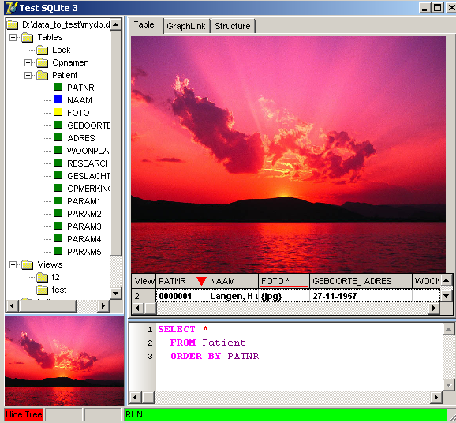
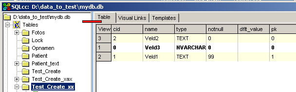
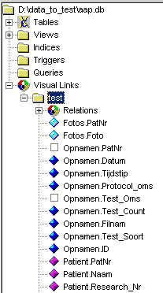

march 2007
SQL DataBase Manager
Introduction
This is a simple SQL DataBase manager. At the moment only SQLite is supported, but it is easy to extend this module to all standard SQL databases (MySQL, PostgreSQL, Interbase, Firebird, MS SQL, Sybase, Oracle) in the future. All the settings of this module are stored for each database entry, in a local project file, so you can create multiple views of the same database and each user can create his own views, totally independent of the views stored in the database itself. This database manager is not only good for managing databases, but also very well suited to learn yourself SQL: the SQL code of all actions is displayed in the editor.
This database manager is written in Delphi-7 and released as open source under BSD license.
Table-View
The most basic look into the database is given by the "table-view". This view can be used to view tables, views, edit the tables and to test SQL-queries. The table-view consists of the following main objects:

The table has all normal windows behaviors (edit, insert, delete, column resize, column move etc).
Clicking on the small image on the left-bottom, toggles between the screen shown above and the screen shown below. In the screen below, the table is reduced to just 1 line, while all remaining space is used for the image. Navigation through the records of the table or view stays exactly the same as above. This also yields for editing facilities.

The editor at the bottom, is used for several purposes. The editor is used to show the actual SQL code that's used when a table or view is shown, by selecting it in the database tree. On the other hand it can be used to enter any SQL statements you like. As soon as you manual edit the contents of this editor, the run-panel in the status will change it's color to indicate "modify". Either by clicking on the run-panel or by pressing F9, the code in the editor will be executed and the result will be shown in the table-page.
General Keys
|
Key |
Action |
|
F1 ctrl-F1 |
Help information, can be changed by editing the ini-file |
|
F9 |
In editor, - if selection available, executes selection - if caret in code, it searches for a code-block, going up and down until empty line or comment line, and execute the code-block |
Key actions in database-tree
|
IconClick |
Enter |
Ctrl-Enter |
Other |
|
|
Database File |
Open Database can also be done by - select + RM |
Show Database Structure |
Alt-Enter will open the database in the SQLite3 console application. (**) Ins = (TO_import) personal use |
|
|
Tables |
||||
|
Table-1 |
Show Table Data ordered by the tree below can also be done by - select + RM |
Show Table Structure |
Delete Table - Del - RM-delete |
|
|
Field-1 |
Toggle Visibility Field-1 |
Show Table Data ordered by Field-1 can also be done by - double-clicking - select + RM |
Show Table Structure |
|
|
Views |
||||
|
View-1 |
Show View Data ordered by the tree below can also be done by - select + RM |
show view SQL ? |
||
|
Field-1 |
Toggle Visibility Field-1 |
Show View Data ordered by Field-1 can also be done by - double-clicking - select + RM |
show view SQL ? |
|
|
Visual Links |
||||
|
Link-1 |
Show Data, generated by the Visual Design. |
Show Visual Design |
Delete Link - Del - RM-delete |
|
(**) In the inifile of the program, you've to define where the sqlite3.exe program can be found:
Edit Data
Images
The following image types are supported: BMP, EMF, GIF (including transparency and animation), ICO, JPG, PNG, WMF.
If an known image is detected, then in the table cell the file-extension between brackets is given, e.g. a PNG image will be shown in the table as "{png}". Editing an image can be done by selecting the cell in edit mode and then pressing F2, or in none edit mode by double-clicking on the cell. Removing an image can be done by remove the text in the cell. Storing other data in the cell is also possible, as long as the table cell's first character is not a bracket "{".
|
BlobFields |
View |
Edit |
Update |
Delete |
|
empty |
+ |
separate |
- |
|
|
known picture format |
{png} |
+ |
separate |
+ |
|
other |
{blob $xxxx} |
- |
- |
- |
Edit Table Structure
Database Structure
By pressing Ctrl-Enter on the database node (top-most node), the structure of the database is shown. At this moment the table ordering can not be changed, column drag&drop is allowed.
The creation string of a table can be viewed more comfortable by selecting the table definition row in the database structure table. When now pressing F2, the table creation string will be shown in the code highlighted editor, as shown in the picture below
Deleting a table, view, etc. is simply done by pressing del in the database tree (a confirmation will be asked).
Inserting a new table, view, etc. can be done in the database tree, through the RM-menu.
For editing the structure of a table, view, etc., press Ctrl-Enter in the database tree, which will show the structure in the stringgrid.
Relations
Because you can freely move around between database-tree, table and code editor, it's interesting to know what the actual relations between these elements are. For that purpose there are 2 link markers, the green rectangles in the figure below, which are visible if there's a direct relation. The upper linkmarker, indicates that there's a direct link between the database-tree and the table. It's color is green, when the table contains data and it's color is red, when the table contains meta-data (e.g. the field definitions of a table, the elements of the database). The vertical code-link at the bottom is shown when the table is generated with the exact code in the editor. It's also possible to use the "EXPLAIN" option to see the virtual machine instructions of a statement (by pressing Ctrl-F9), in that case the vertical code-link will color red.
If you select to show the upper tree node (i.e. the structure of the database itself), the upper linkmarker will color blue.
Edit Table Structure
After selecting a database table in the database tree, and then pressing Ctrl-Enter, the structure of the database table will be shown in the grid. That this information concerns the structure of the database table and not the data of the database table, is also indicated by the red left linkmarker.

By clicking on the most top-left cell of the grid (or by double-clicking on a normal data cell), the edit mode is entered. In the edit mode you change the structure of the database table and (re-) order the columns (just drag and drop the left fixed cell). The link between the old database table and the new database table, is maintained by the CID-column, so it's not advised to edit the CID-column unless you know what you're doing. For the "NOTNULL" column, yields, if no value is entered or a value of zero is entered, the column may be left NULL. For the "PK"-column (Primary Key),
yields the same: zero or empty is no Primary Key else this columns is a Primary Key.
The editor supports Insert, Delete through the normal windows keys, and Append through the RM-menu (you can also just goto the bottom of the grid and press Arrow-Down). If you want add more than one field, the append is more appropriate, because it has automates the addition of new lines when moving the arrow down, or Enter on the last column.
When leaving the edit mode (again by clicking on the most top-left cell or by double-clicking on any data cell, the user is asked if the changes should be stored. If the user confirms, the changes are executed and the editor will show the main SQL commands.
So when just reordering some columns, the editor will show:
If the editor is set in "Novice mode", it will give a more extensive explanation of what is done.
Templates
Although finally the templates will probably implemented just like the other templates in JALcc, I found it very convenient to introduce a quick and dirty template facility, which after all doesn't look so bad at all.
Below the template editor is shown, which is a normal code editor with exactly the same highlighting as the editor on the bottom of the window. The contents of this template editor is automatically saved and restored to and from a file with the name of the program, but with the extension '.tmp'.
When selecting the templates page (notice that the text on the statusbar has changed), the selected portion of the templates editor is executed, and the program automatically jumps to the table-page where the results will be shown.
This page let's you create local queries (i.e. stored in the local file) by a graphical design. This part of the program is rather experimental, works for simple joins, but there's no guarantee it'll work for complex joins (at the end of this paragraph, the protocol is explained).
When pressing New, each tables form the open database will generate a box with a list that contains all the fields from that table. The title of a table window will contain both the name of the table and the automatic generated abbreviation of that table-name. Tables can be moved around by dragging the caption like any normal window. Now you can create relations between fields of the different tables, by selecting an element from a list (=field), drag it into another box (=table), and drop it on one of the fields in that other table. After dropping, default a left join is created. The type of relationship can be changed, by RM-click on a link (in the final code right links will be reversed into left joins). When you click on a field that has one or more relations, all relations to that field will color red and all the fields from other tables that are connected to the selected field will be selected. By pressing EXEC, the SQL code will be generated, and the SQL code will be displayed in the editor and be executed, so you can see the results right away. By checking "Use Table Abbreviations", all table-names will be aliased, so somewhat more compressed code will be generated, this might be especially useful when you want to add and extensive "where" clause.
"Name" is just the name under which this design will be stored in the database-tree.
When the above design is generated with the abbreviation check-box on, the following SQL code will be generated:
After executing a visual design, the design will automatically be stored in the tree, just like any other table or view. Remember these visual designs are local and are not stored in the database, therefor it resides in the special node "Visual Links". The fields can be manipulated just like other fields, so the can be ordered by dragging them around and their visibility can be toggled by clicking on the icon. The node "Relations" just holds the internal information of the visual design.

Algorithm for SQL generation
The current algorithm is quit simple, I've tried different ones, and even with the fantastic help of the SQLite newsgroup, I wasn't able to create a better one (as I'm writing this, my knowledge of SQL is almost zero).
Table Details
The columns of the table can be resized and ordered in the standard windows way.
Making columns (=fields) visible or not, is done in the database-tree.
A. Clicking on the top-leftmost cell, toggles between view-mode and edit-mode. Double-clicking on a cell also toggles between edit and view, and is often a more convenient way. In view mode "touching" the table results in a row selection. In edit-mode, "touching" the table results directly in editing.
B. Table ordering shown is Ascending on this column. Ordering can be changed by double-clicking on the column-header or by the right-mouse popup-menu of the column-headers.
C. The actual blobfield that is used to draw the image of the actual record is marked with a red border. In case their are mor blob-fields, you can select another blobfield column through the right-mouse poup menu of the column-headers.
D. The actual record is highlighted by making the characters bold.
E. Known blob-fields are decoded to human readable names, otherwise the SOI code is displayed.
F. Primary Key: the column header is colored lime
G. Not Null: the column header is colored cream
Moving with the cursor over a column-header, will popup a hint, indicating the field-type.
Columns can be moved by simply dragging them to a new position.
The column-header of the table has a popup menu to select sorting of the selected column or in case there are more blob-fields, the selection of the actual blob-field used for displaying images. The sort order can also be changed by doubleclicking on a column-header.
RM-plaatje
Append this is often the most convenient way to append new records, because the table will automatically expand (works with ENTER in last column and also arrow-down in last row).
Printing Tables / Views
Through the RM-menu, there's a simple print function, that can print as many columns as fit on the width of 1 page. The column layout is exactly like shown on the screen. At the top of the print, the SQL statement that generated the table is printed.

SQL
When using a DROP or DELETE statement, the user is asked for confirmation.
When closing the program, while data records were changed, the user is asked if a VACUUM should be performed.
Delphi Libraries
This module is developed in Delphi-7. Besides the standard Delphi-components, the following extra libraries are used:
ToDo
NOT todo